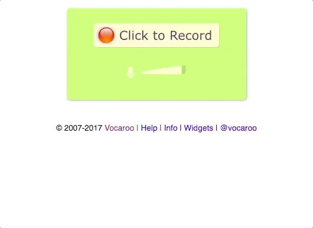

Become a data donor!
Upload a .wav file of yourself speaking the following paragraph. The easiest way to record a .wav file is using Vocaroo. The file will save to your downloads folder. Upload it and we'll show you a visual representation of your recording. Completing an 8 question psychiatric survey will conclude your data donation.
When you begin recording, speak the following paragraph. If you fumble on some words, carry on. It does not have to be perfect. And believe or not, studies show you can't conceal or fake depression in your voice. The underlying acoustic features remain the same.
"This sentence has five words. Here are five more words. Five-word sentences are fine. But several together become monotonous. Listen to what is happening. The writing is getting boring. The sound of it drones. It’s like a stuck record. The ear demands some variety. Now listen. I vary the sentence length, and I create music. Music. The writing sings. It has a pleasant rhythm, a lilt, a harmony. I use short sentences. And I use sentences of medium length. And sometimes, when I am certain the reader is rested, I will engage him with a sentence of considerable length, a sentence that burns with energy and builds with all the impetus of a crescendo, the roll of the drums, the crash of the cymbals–sounds that say listen to this, it is important." – Gary Provost
Donate
We're in need of data donors. Upload an audio file and take an 8 question depression survey and we'll be eternally grateful. 3 minutes of your time could help save lives!
The Project
Want to get technical? Learn more about the data science behind creating a model to detect depression from speech and keep track of how well we're predicting as our donations grow!

Contact
If you're inspired, have feedback, or are eager to start contributing, drop me a line. This project is in an early stage with plenty of room for improvement. I'm eager to hear from you!